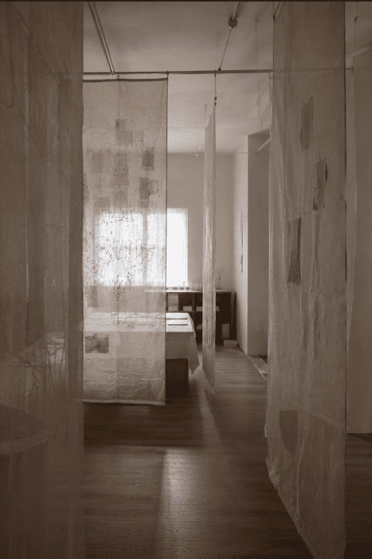
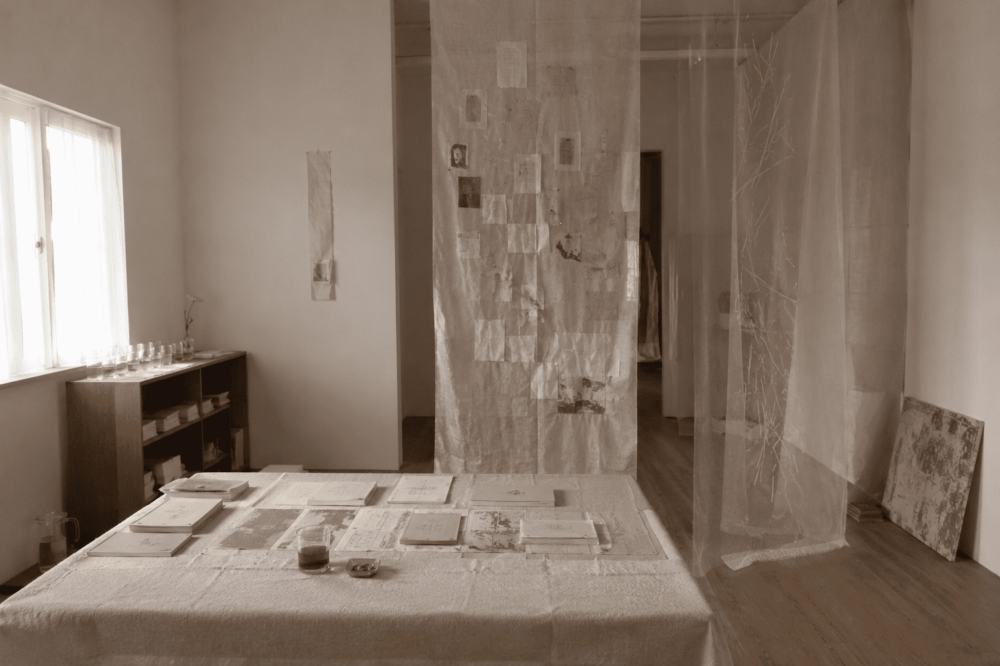
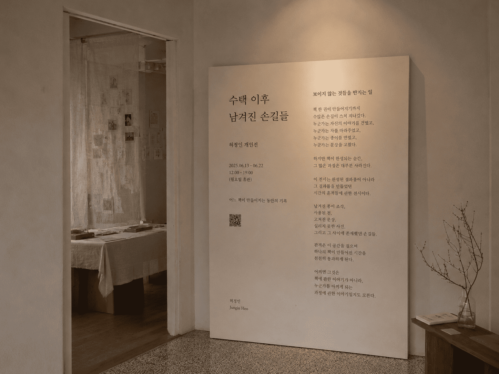
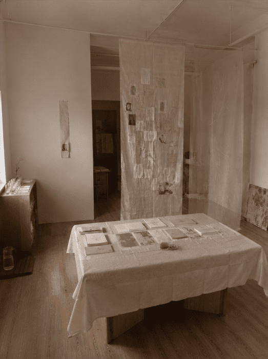
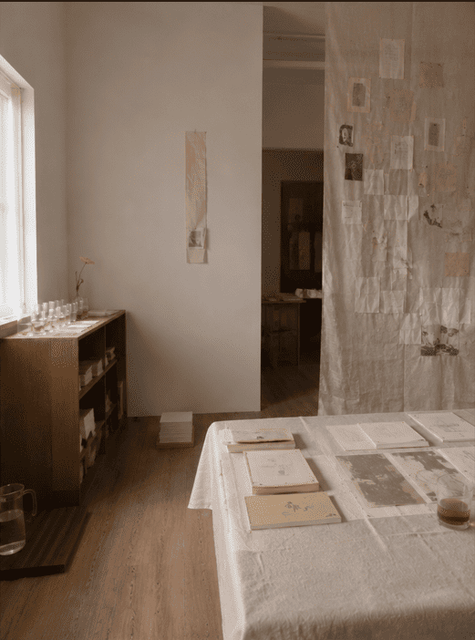
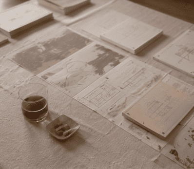
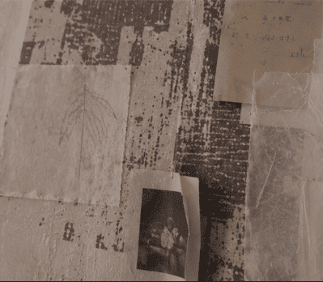

한 권의 책이 만들어지는 동안 사라진 것들에 대하여.
책 한 권이 만들어지기까지 수많은 손길이 스쳐 지나갔다.
누군가는 자신의 이야기를 건넸고, 누군가는 차를 따라주었고, 누군가는 종이를 만졌고, 누군가는 문장을 고쳤다.
하지만 책이 완성되는 순간, 그 많은 과정은 대부분 사라진다.
이 전시는 완성된 결과물이 아니라 그 결과물을 만들었던 시간의 흔적들에 관한 전시이다.
관객은 이 공간을 걸으며 하나의 책이 만들어진 시간을 천천히 통과하게 된다.